Electronic Medical Record
A digital healthcare solution designed to organize patient information and create a clearer, more efficient experience for healthcare professionals.
Efficient healthcare workflow
I focus on UX research and analysis to understand user needs and translate them into more intuitive interface structures. The design process encompasses everything from developing user flows, wireframes, and UI designs to creating prototypes.
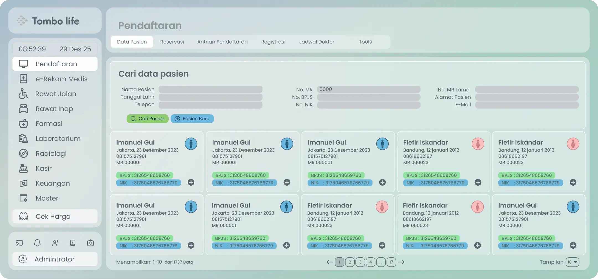
Creating consistency the healthcare interface.
A design system is used to establish a consistent look and feel across the RME interface. The use of color, typography, spacing, components, and visual hierarchy helps maintain order while creating a more intuitive user experience.
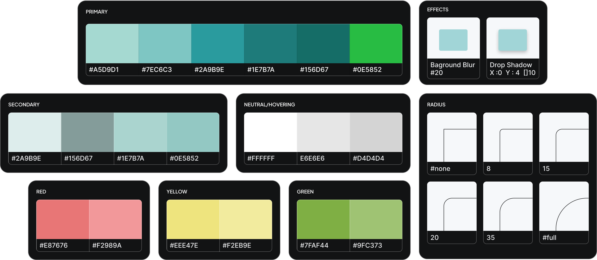
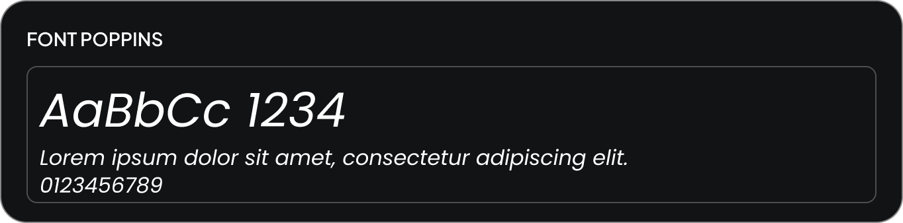
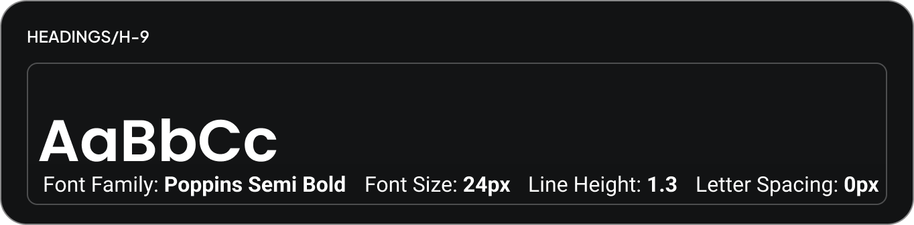
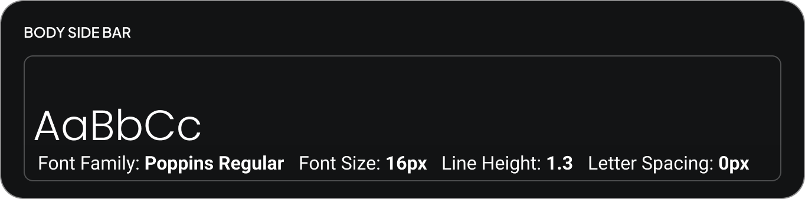
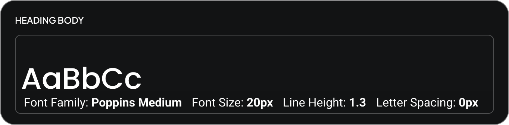
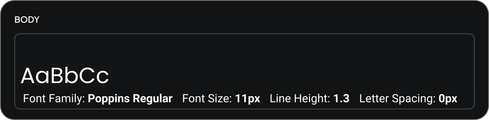
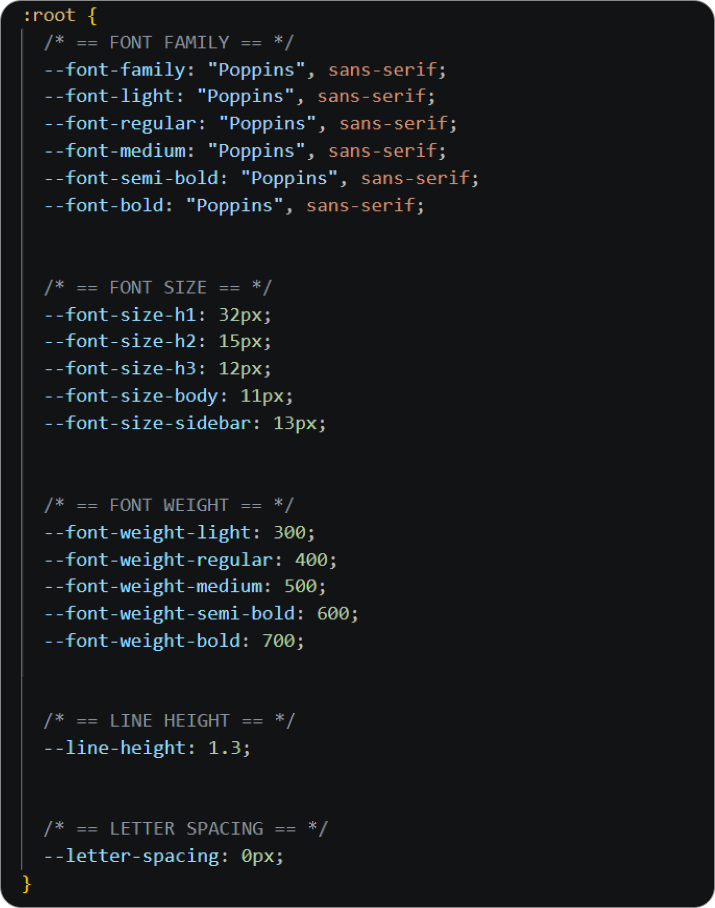

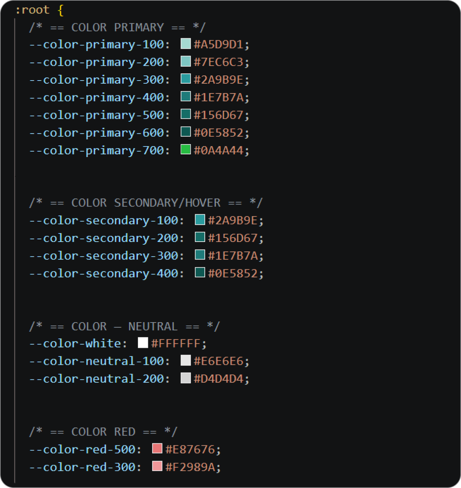

Design system - colors, typography, spacing and visual elements.
Reusable components for a scalable interface.
Reusable components were designed to create a consistent interface while making future iterations easier and more efficient.
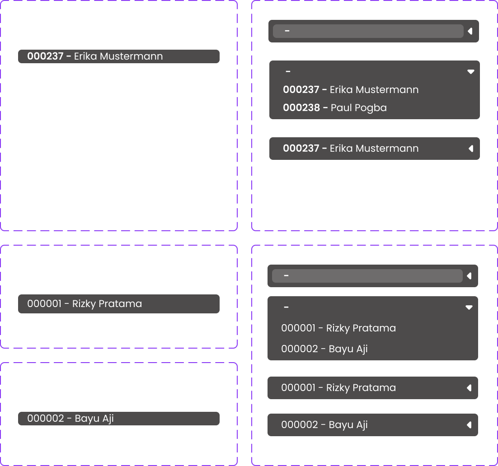
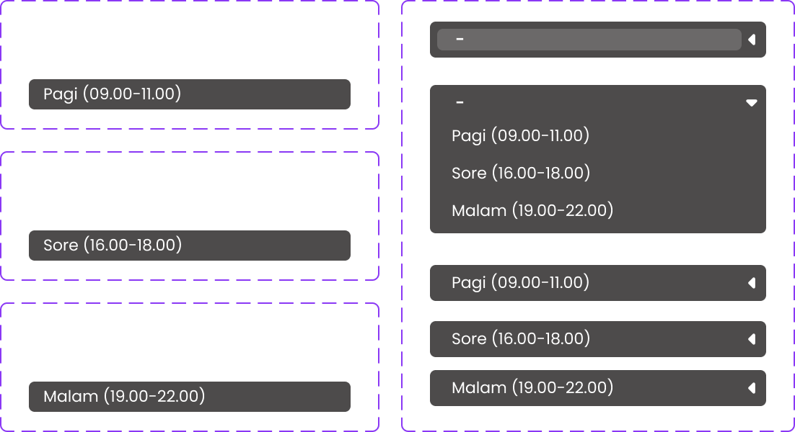
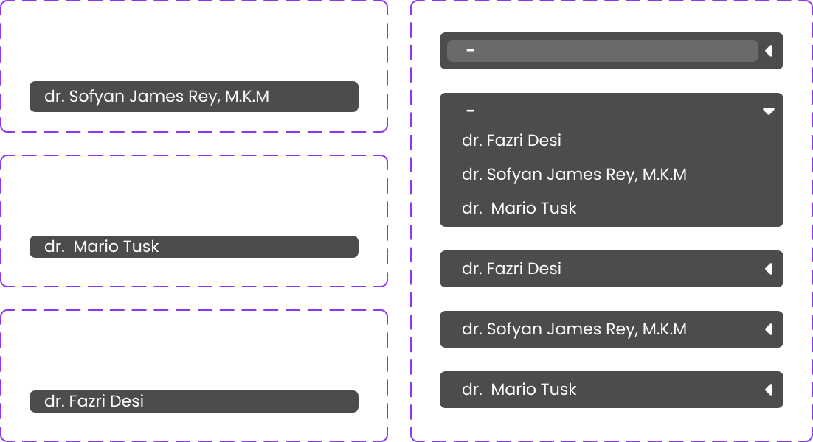
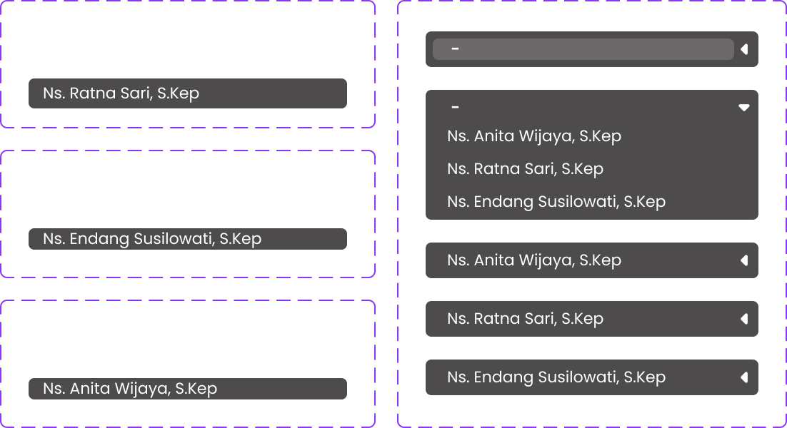
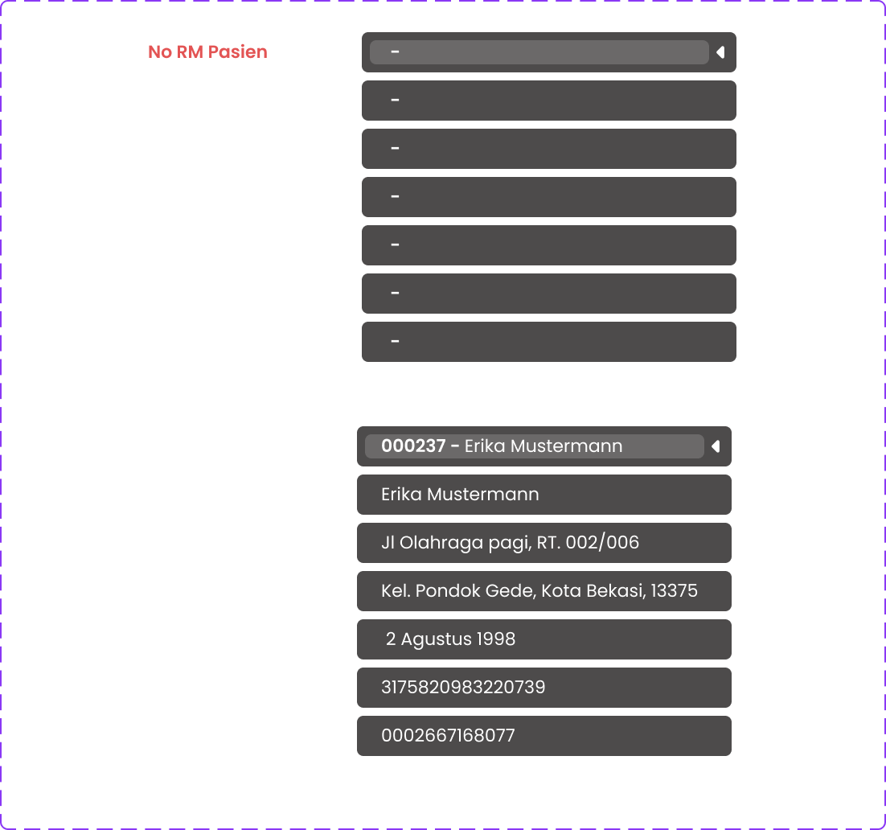
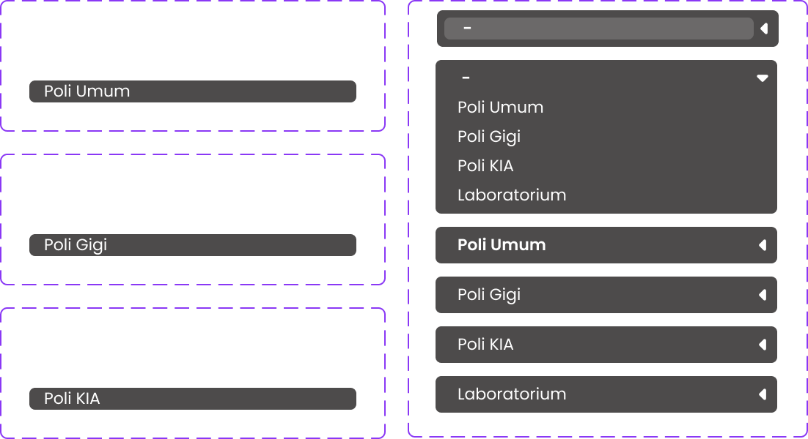
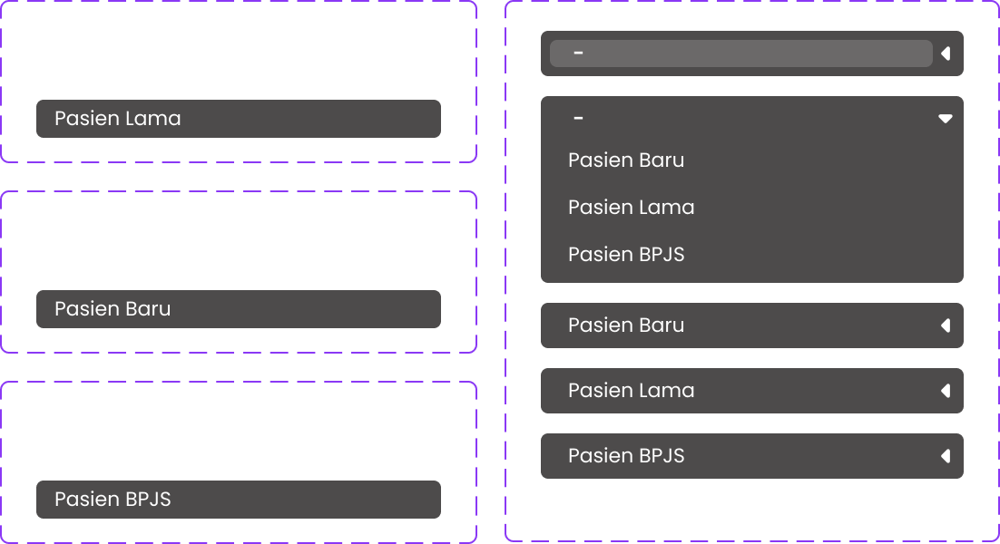
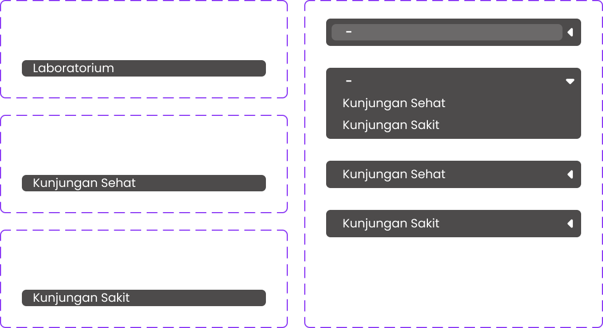
Component library - reusable UI elements for the EMR interface.
Bringing the interface to life.
Exploring interaction and motion to create a more engaging and intuitive digital experience.
What I worked on.
UX Research
Understanding user needs, workflows, and pain points.
User Flow
Structuring the interaction and workflow of the application.
UI Design
Creating the interface, components, and visual system.
Designing a better workflow.
The EMR application was designed to help users manage business processes and information through a centralized digital platform.
The design focuses on creating a clear information hierarchy, reducing unnecessary steps, and making complex workflows easier to understand.
Explore the final experience.
Explore the complete interactive prototype and experience the final ERM interface and user flow.